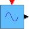

<< x2c_RectangleWave
Audio
x2c_TriangleWave >>
X2C Audio Library
>>
Audio
> x2c_SineWave
x2c_SineWave
X2C Sine Wave Generator

Description
Generation of a sine wave.
Inports
None
Outports
u:
Sine wave output
Mask Parameters
Amplitude:
Amplitude of wave
Frequency:
Frequency in Hz
Offset:
Offset
Phase:
Phase [-Pi..Pi]
ts_fact:
Multiplication factor of base sampling time (in integer format).
Implementations
FiP8:
8 Bit Fixed Point
FiP16:
16 Bit Fixed Point
FiP32:
32 Bit Fixed Point
Float32:
32 Bit Floating Point
Float64:
64 Bit Floating Point
Report an issue
<< x2c_RectangleWave
Audio
x2c_TriangleWave >>